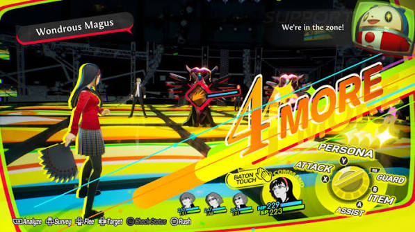

Shin Megami Tensei: Persona 4 é um aclamado jogo eletrônico de RPG lançado originalmente em 2008 pela Atlus. Cronologicamente o quinto título principal da franquia Persona, ele se consagrou como um dos últimos grandes exclusivos do PlayStation 2. Uma versão aprimorada do jogo, Persona 4 Golden ,foi lançada para PlayStation Vita em 2012 e recebeu versões para Windows em 2020 e para Nintendo Switch , PlayStation 4 , Xbox One e Xbox Series X/S em 2023.
.jpeg)
A história de Persona 4 acompanha Yu Narukami (o protagonista), um estudante do ensino médio que se muda temporariamente da cidade grande para Inaba, uma pacata cidade rural no interior do Japão, para morar com seu tio Ryotaro Dojima e sua pequena prima Nanako.
Logo após sua chegada, Inaba é atingida por uma série de assassinatos bizarros e inexplicáveis: as vítimas são encontradas penduradas em antenas de televisão, envoltas em um denso nevoeiro.
A Investigação e a Verdade:

Ao longo de um ano escolar, o grupo cresce com a entrada de novos integrantes (como Kanji Tatsumi, Rise Kujikawa e Naoto Shirogane), equilibrando a rotina comum de estudantes japoneses (estudar, fazer amizades, trabalhar de meio período) com a caça ao culpado por trás dos assassinatos.O desfecho de Persona 4 se resolve quando a Equipe de Investigação descobre que o verdadeiro assassino por trás dos crimes de Inaba é o detetive Tohru Adachi. Agindo por puro tédio e frustração com o mundo, Adachi usava o Mundo da TV como um jogo sádico para se divertir. Ao ser confrontado, revela-se que ele estava possuído por Ameno-sagiri, o deus da névoa. Essa entidade pretendia cobrir o mundo real com o nevoeiro, transformando a humanidade em Sombras, sob a justificativa de que as próprias pessoas preferiam viver em uma ilusão confortável a encarar a realidade. O grupo derrota o deus e liberta Adachi, limpando temporariamente a cidade.
Wikipedia:Shin Megami Tensei Persona 4